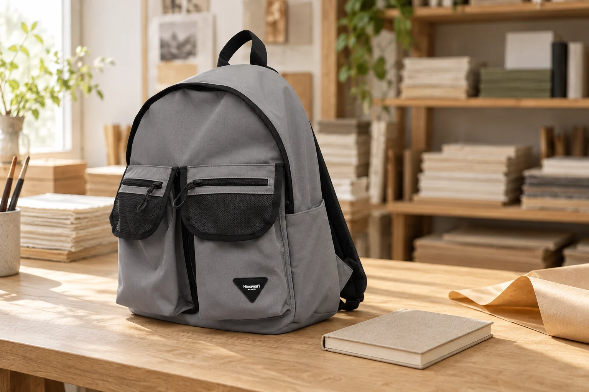

공방 수업 가방은 완성품이 돌아올 모습부터

공방 수업에 갈 때는 개인 소지품만 있어도 돌아올 때 새 물건 하나가 더해질 수 있습니다. 완성품이 납작한 노트인지 입체 장식인지에 따라 들고 올 모습도 다릅니다. 가방의 빈 공간을 먼저 만드는 대신 무엇을 어떤 상태로 받을지 알아봅니다. 수령 방식과 포장, 유지할 방향을 정하면 귀가 길의 준비가 구체적으로 시작됩니다.
예약 안내에서 수업 시간과 장소를 확인할 때 완성품 수령 정보도 읽습니다. 당일 가져오는지 나중에 찾는지, 포장이 제공되는지 확인합니다. 적혀 있지 않으면 공방에 질문할 수 있습니다. 다른 수업에서 받은 포장 방식이 이번에도 같다고 생각하지 않습니다. 아직 크기를 모른다면 어느 정도인지와 포장한 뒤의 모습을 알아볼 항목으로 남깁니다.
완성품의 크기와 포장한 크기
가상의 비교로 제본 노트는 표면과 모서리를 어떻게 다룰지 생각하게 하고, 손잡이가 있는 입체 작품은 돌출된 부분과 놓일 방향을 보게 합니다. 구체적인 취급은 각 수업의 안내를 따릅니다. 이름이 비슷한 작품을 만들었다고 이전의 운반 방법을 자동으로 쓰지 않습니다. 포장까지 마친 상태가 실제로 가지고 올 묶음입니다.
담을 물건을 알았으면 가방에 넣을지 별도로 들지 정합니다. 가방 안에 들어갈 크기라도 유지해야 할 방향이 있으면 이동하는 동안 그 상태가 가능한지 봅니다. 기울이지 말아야 하는 작품이라면 안내받은 다른 운반 방법을 선택할 수 있습니다. 지퍼가 닫힌다는 사실과 작품을 원하는 상태로 가져올 수 있다는 판단은 각각 필요합니다.
출발 준비물은 수업에서 제공되는 것과 개인이 준비할 것을 나눕니다. 도구가 포함된 수업이라면 같은 도구를 새로 더 챙기기 전에 실제 안내를 확인합니다. 개인 준비가 필요한 경우에는 그 도구의 보관 방법을 따릅니다. 돌아올 작품을 위해 빈 공간을 남기는 일과 필수 준비물을 빼는 일을 같은 선택으로 생각하지 않습니다.
공방 외출의 제품 자료로 Himawari No.1230을 함께 소개합니다. 사용할 가방을 정할 때는 완성품의 포장 정보를 먼저 두고 다른 소지품을 놓아봅니다. 작품을 넣었다 뺄 때 지갑이나 도구를 계속 옮겨야 하는지 생각하세요. 한 가방에 모두 합치기 어려우면 작품을 별도로 운반하는 방법을 준비할 수 있습니다.

작업대에 가방까지 펼치지 않기
수업에 도착하면 안내된 가방 보관 위치를 봅니다. 작업대에서 필요한 물건만 꺼내고 나머지는 닫아두면 작품을 만들 영역이 분명해집니다. 사용하는 재료와 도구는 공방의 안내에 따릅니다. 개인 소지품을 여러 곳에 내려놓으면 수업을 마친 뒤 작품뿐 아니라 그 위치도 다시 확인해야 합니다.
진행 중에는 완성품을 어떻게 받아갈지 질문할 시간을 남깁니다. 끝나자마자 급하게 출발해야 한다면 수업 초반에 귀가 조건을 알려둘 수 있습니다. 포장할 수 있는 시점과 수령 방법은 작업 재료에 따라 실제 안내가 필요합니다. 겉에서 마른 것처럼 보인다는 관찰만으로 바로 가방에 넣을 수 있다고 결정하지 않습니다.
완성 직후에는 어떤 면에 포장재가 닿아도 되는지, 어떤 방향으로 옮길지 담당자에게 확인합니다. 추후 수령을 안내받았다면 가방에 넣어가기 위해 절차를 바꾸려 하지 않습니다. 배운 내용과 함께 받는 보관 안내도 기록해둘 수 있습니다. 작품의 이름만 기억하기보다 이동 뒤에 어떻게 둘지 알아야 귀가 후 정리가 이어집니다.
작품을 받는 자리에서 배치 마치기
포장된 작품을 받으면 그 상태로 운반할 방법을 봅니다. 노트라면 모서리와 여밈이 맞닿는지, 상자라면 손잡이와 바닥을 어떻게 잡을지 확인할 수 있습니다. 실제 작품을 임의로 시험하기보다 담당자의 안내 안에서 필요한 동작을 살펴보세요. 출입구에서 다시 포장을 풀기보다 받은 자리에서 질문과 배치를 마치는 편이 낫습니다.
가방 안에 둘 때는 다른 소지품을 함께 놓고 순서를 봅니다. 귀가 중 지갑을 꺼내려면 작품을 매번 밖으로 빼야 하는 배치인지 생각합니다. 작품의 취급 안내가 있다면 그 조건에 맞춰 운반하고, 확인되지 않은 압력이나 방향을 괜찮다고 판단하지 않습니다. 다른 짐을 줄이거나 따로 들 방법이 필요하면 출발 전에 정합니다.
함께 받은 포장재와 안내문은 작품과 짝을 유지합니다. 여러 작품을 만들었다면 각각의 정보를 구분하세요. 개인 도구를 사용했다면 반환할 것과 가져갈 것을 다시 확인합니다. 작업대와 가방 보관 위치를 차례로 보고 개인 물건을 챙긴 뒤 귀가합니다. 새 완성품이 생겼다고 기존 소지품의 회수 순서를 생략하지 않습니다.
집에서 둘 곳을 먼저 마련하기
귀가하면 작품을 먼저 꺼내 공방의 안내에 맞는 자리로 옮깁니다. 포장을 바로 벗겨도 되는지, 어떤 상태로 보관할지 실제 안내를 봅니다. 정리가 필요한 사용 도구와 포장재도 나누어 꺼냅니다. 작품이 가방 안에 있다는 것을 잊고 다음 외출 준비를 시작하지 않도록 돌아온 묶음을 한 번 펼쳐볼 수 있습니다.
다음 수업을 위한 메모에는 포장한 크기와 별도로 들었던 물건, 사용하지 않은 준비물을 남깁니다. 같은 수업을 다시 가더라도 작품의 형태가 바뀌면 필요한 운반이 달라질 수 있습니다. 이전 기록은 질문을 만드는 자료로 사용합니다. 가방을 더 큰 것으로 바꿀지 결정하기 전에 어떤 상태의 완성품을 가져올지부터 알아봅니다.
수업 예약을 확인하는 단계에서 귀가할 물건을 함께 떠올리면 출발 짐과 돌아오는 짐이 연결됩니다. 포장한 작품이 어느 방향으로 놓여야 하는지, 집에서는 어디에 둘지 알아두세요. 완성품을 받은 뒤의 짧은 질문과 정리가 작품 만들기의 다음 순서가 됩니다. 개인 소지품을 챙기고 안내된 운반 방법으로 문을 나서는 준비를 마칩니다.